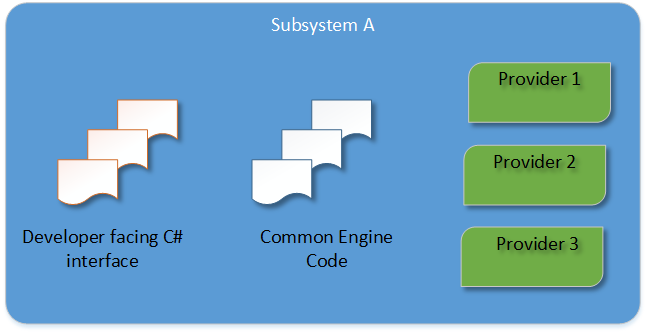
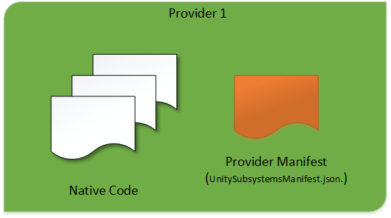

XR SDK Home¶
- Overview
- Creating an XR Provider
- Runtime discovery and activation of subsystems
- XR Management - Editor UI and settings
Subsystems¶
General:
VR-related:
AR-related:
Interfaces¶
General:
Overview¶
The purpose of this package is to allow multiple backends (called Providers) to implement a single engine feature (called a Subsystem) in Unity. User applications can select and activate Providers at runtime.
Subsystem¶
A single Subsystem consists of:
- a developer facing C# interface
- a native interface which is implemented by multiple backends (Providers) via dynamic libraries
- common engine code which handles communicating with the c# interface, the native interface, and the rest of the engine.

Subsystem descriptor¶
A subsystem descriptor is metadata about a subsystem which can be inspected before loading or initializing a subsystem. This comes from a manifest file and is accessed via a C# interface; a Create() method activates the subsystem and provides an instance of it to user script.
See Runtime Discovery and Activation of Subsystems.
Subsystem instance¶
When Create() is called on a subsystem descriptor, a subsystem instance is created. Scripting code interacts with these instances in order to communicate with the subsystem. The subsystem itself has a lifecycle: it can be started, stopped, and shut down.
Provider¶
A Provider is the native implementation of a subsystem. One subsystem can have multiple providers. Some subsystems can allow multiple Providers to be active at a time, but others might be mutually exclusive.

Providers conform to the Unity Native Plugin Interface, with some additional lifeycle support built on top. The entry point is the UnityPluginLoad method. From there the provider must register with all subsystems it intends to implement.
extern "C" void UNITY_INTERFACE_EXPORT UNITY_INTERFACE_API UnityPluginLoad(IUnityInterfaces* unityInterfaces) { s_XrDisplay = unityInterfaces->Get<IUnityXRDisplayInterface>(); UnityLifecycleProvider displayLifecycleHandler = { NULL, // This can be any object you want to be passed as userData to the following functions &Lifecycle_Initialize, &Lifecycle_Start, &Lifecycle_Stop, &Lifecycle_Shutdown }; s_XrDisplay->RegisterLifecycleProvider("Provider Plugin Name", "Display0", &displayLifecycleHandler); // Register with other subsystems... }